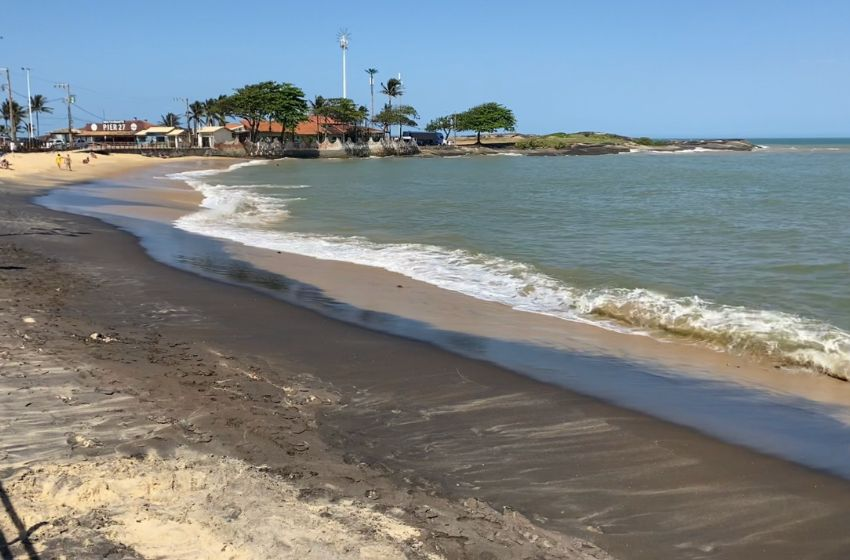

Okinawa - Japão
Okinawa, a belíssima ilha ao sul do Japão, é o berço do Karate, uma arte marcial que se espalhou pelo mundo e conquistou inúmeros praticantes. Se você é um entusiasta do Karate e está planejando uma viagem para Okinawa, prepare-se para uma experiência única e enriquecedora. Além de suas praias paradisíacas e rica cultura, Okinawa oferece a oportunidade de visitar dojos históricos, assistir a demonstrações autênticas e até mesmo treinar com mestres locais. Essa viagem não só aprofundará seu conhecimento sobre o Karate, mas também permitirá que você vivencie a essência cultural de onde essa arte marcial se originou.
Vitória - Espírito Santo
A areia preta de Vitória, encontrada nas praias da capital do Espírito Santo, é uma característica geológica notável devido à sua cor escura, resultante de minerais como magnetita e outros minerais pesados. Essa areia não só é visualmente distintiva, mas também possui benefícios ambientais e econômicos. Ela contribui para a diversidade geológica da região, atraindo turistas e estudiosos interessados em suas propriedades únicas. Além disso, a areia preta pode ter aplicações práticas, como em projetos de engenharia e construção, devido às suas características físicas. Em resumo, a areia preta de Vitória é um exemplo de como elementos naturais podem ter valor estético e funcional, enriquecendo o patrimônio geológico e turístico da cidade.
